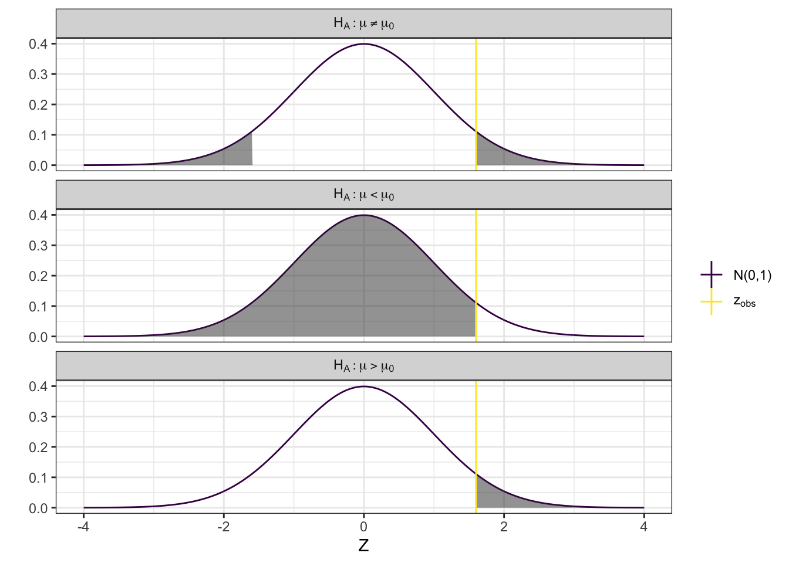

2 Discrete
A variable is called a discrete variable if the possible values of the variable are countable, that is if you can count them. Note that a discrete variable can technically have an infinite number of possible outcomes.
A discrete variable is of one of two subtypes: categorical or ordinal.
2.1 Categorical data
Categorical variables are discrete variables with no particular ordering of the categories.
2.1.1 Examples – categorical data
The classical example of a categorical variable is sex. For each subject, the value of this variable is one of two possible values: male or female.
Other examples:
- color. We generally work with a set number of categories.
- race
- blood type
- country of origin
- political orientation
2.2 How to describe categorical data
Categorical variables are often described using frequency counts and relative frequencies.
Frequency counts (or simply frequency) are found simply by counting how many times each possible value of an outcome is present in the data. Relative frequencies are found by dividing the frequency by the total number of observations.
2.2.1 Examples
Below are the frequencies for some categorical variables in the SHOW data set.
edu:
Value Frequency 11 1 12 2 13 3 14 1 15 7 16 1 18 3 19 1 21 1 gender:
Value Frequency 1 10 2 10 marital:
Value Frequency 1 12 2 1 3 1 5 5 6 1 RACE:
Value Frequency 1 18 2 2
We can add relative frequencies to this simply by dividing each frequency by the total number of observations.
edu:
Value Frequency Relative Frequency 11 1 0.05 12 2 0.1 13 3 0.15 14 1 0.05 15 7 0.35 16 1 0.05 18 3 0.15 19 1 0.05 21 1 0.05 gender:
Value Frequency Relative Frequency 1 10 0.5 2 10 0.5 marital:
Value Frequency Relative Frequency 1 12 0.6 2 1 0.05 3 1 0.05 5 5 0.25 6 1 0.05 RACE:
Value Frequency Relative Frequency 1 18 0.9 2 2 0.1
Relative frequencies are useful when trying to compare the values of a specific variable across groups. Say we want to investigate if there are any differences in the marital status between genders in this cohort. We could consider the frequency of marital status stratified by gender:
## gender 1 2 3 5 6 Total
## 1 0.6 (6) 0.1 (1) 0.1 (1) 0.2 (2) 0 (0) 1 (10)
## 2 0.6 (6) 0 (0) 0 (0) 0.3 (3) 0.1 (1) 1 (10)The table above shows the relative frequencies of marital status within each gender (frequency counts in parentheses). So we can see that the same proportion of…
2.3 Ordinal Data
An ordinal variable is a discrete variable where the groups can easily be ordered in a meaningful sense.
2.3.1 Examples
2.4 How to visualize discrete data
Categorical data is often best presented using a bar chart of either frequency counts or relative frequencies.
2.4.1 Bar Charts
Below is a bar chart of the frequency counts of the marital status varaible from the SHOW data.

This can easily be turned into a bar chart of the relative frequencies.